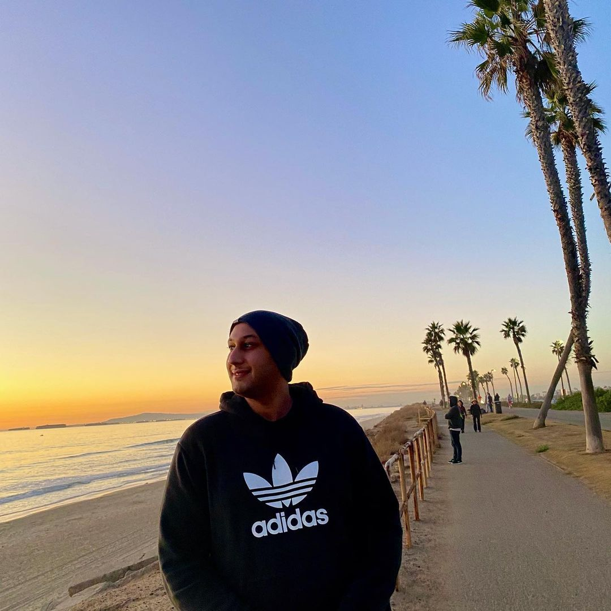

Noreldin Saad

My name is Noreldin Saad, I'm 26 years old with a big dream. A hero of my own story. Something That i love about myself is that I'm always motivated. Always pushing myself forward.
I'm a student at UCI bootcamp. My dream job is to become a web developer at Facebook. Why Facebook? well I have an account on Facebook for almost 12 years now. https://www.facebook.com/NourTarekSaad. I get all my news and connections from Facebook. I believe the idea of Facebook when it first started was amazing. How could someone think about making a website that connects people by click of a button. There is so much still to be done to that website.